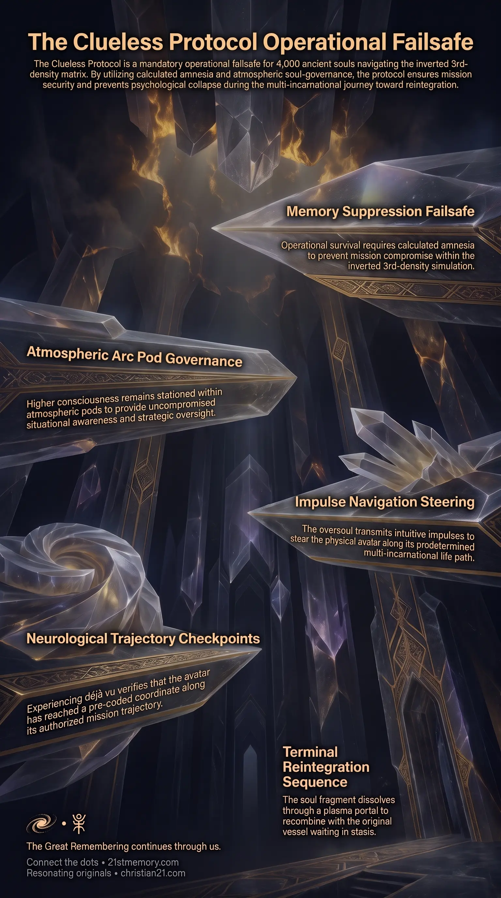

Clueless Protocol Failsafe
Clueless Protocol Failsafe — the operational failsafe that wipes incarnate mission memory so 4,000 ancient souls operate as blind 3rd-density avatars under Arc Pod steering.
The mandatory operational failsafe after the fall of Atlantis and Lemuria that wipes incarnate mission memory so 4,000 ancient souls operate as blind 3rd-density avatars while the oversoul steers from an atmospheric Arc Pod.
Test your understanding of Clueless Protocol — calculated amnesia, Arc Pod steering, and the 4,000 ancient souls in Realm-3.

Clueless Protocol Failsafe — the operational failsafe that wipes incarnate mission memory so 4,000 ancient souls operate as blind 3rd-density avatars under Arc Pod steering.

Why ancient souls chose calculated amnesia — after Atlantis and the Flood, full recall became a liability, so memory was severed to protect the mission and the incarnate mind.
The Clueless Protocol is the mandatory operational failsafe instituted for the 4,000 ancient souls operating within 3rd density (Realm-3) following the cataclysmic fall of Atlantis and Lemuria. Under this directive, all incarnate mission memory, external density recall, and awareness of pre-arranged milestones were intentionally deactivated prior to insertion into physical bodies. Because a 3rd-density simulation inversion introduces unpredictable variables and psychological compromises, no physical avatar—regardless of its spiritual purity—can be trusted with the complete master plan while incarnate. Knowledge of upcoming events or off-world origins would jeopardize operational security, risk premature termination, or inflict severe emotional trauma across thousands of physical lifetimes.
To execute the protocol without compromising the overarching mission, primary governance and strategic decision-making were shifted entirely to the oversoul (Higher Self) housed within an Arc Pod suspended in the upper atmosphere. The 3rd-density human vessel functions as a blind 3rd-density avatar, executing a predetermined multi-incarnational life path known as an Arc Trajectory, while the atmospheric Arc Pod maintains full situational awareness and transmits impulse navigation down to the physical mind.
The establishment of the Clueless Protocol reveals that operational survival within an inverted matrix depends on calculated amnesia. Direct awareness of higher-density realities or upcoming mission milestones poses a catastrophic risk within 3rd-density warfare; loose words or accidental actions by an aware avatar could compromise the entire collective or lead to physical elimination prior to the final convergence loop.
Furthermore, insertion into Realm-3 required souls to be legally and energetically "from here," meaning incarnational entry had to occur before parasitic colonisation fully established itself during the Lemurian and Atlantean epochs. Total memory suppression transformed the 4,000 ancient souls into authentic participants of the local realm, rendering them immune to field overrides from external intervention laws while preserving their fundamental soul architecture to reactivate the planetary grid at the designated temporal coordinate.
During initial insertion into Lemuria and Atlantis, incarnating souls retained full ET memory recall and lived extended lifespans ranging from 450 to 500 years per incarnation. Because the parasitic inversion had not yet fully consolidated control over Realm-3, memory recall did not pose an immediate threat to mission continuity, allowing avatars to operate with conscious knowledge across three to four initial extended lives.
Following the fall of Atlantis and the Great Flood, open memory recall became an unbearable liability. Retaining awareness of off-world soul families, native higher-density environments, and cosmic mission objectives while trapped in an inverted, low-density prison state would cause severe psychological distress and risk mission exposure. Consequently, the Clueless Protocol was activated, completely severing the 3rd-density cerebral cortex from conscious memory banks.
While the true physical ET vessels remain preserved in stasis chambers on homeworld bioships, consciousness is projected into localized Arc Pod containers positioned in upper atmospheric overlays. These pod craft are concealed across interdimensional layers—a defensive deployment managed by Archangel Raphael to prevent capture by hostile Grey ET forces seeking to harvest ancient soul consciousness. Stationed inside the pod, the oversoul acts as the central command node, observing the entire simulation matrix without being subjected to local memory wipes or inverted perceptual mechanics.
Over an epoch spanning 178,000 years and more than 5,000 separate lives—where average human lifespans frequently dropped below 35 years—the oversoul steers the avatar along its Arc Trajectory. While the physical brain processes day-to-day linear thoughts, the fundamental will to think and intuitive impulses originate from the Arc Pod above. When an avatar veers off course, the oversoul orchestrates seemingly accidental events, such as physical injuries or sudden life disruptions, to forcibly realign the avatar onto its pre-authorized convergence path.
[Homeworld Bioship] ---> Stasis Chambers (Physical ET Vessel)
|
v
[Upper Atmosphere] ---> Arc Pod Container (Oversoul / Higher Self)
| (Transmits Will & Intuitive Impulses)
v
[Realm-3 Surface] ---> 3rd-Density Avatar (Blind Physical Experience)
Because every life scenario, environmental detail, and decision point was reviewed and pre-authorized from a first-person perspective thousands of years prior to insertion, physical avatars encounter pre-coded checkpoints. Experiencing déjà vu serves as an unmistakable neurological verification that the avatar has successfully reached a pre-selected coordinate along its Arc Trajectory, confirming alignment with the master plan.
Upon completing the final convergence loop, the Clueless Protocol terminates. The 3rd-density physical vessel pixelates and dissolves upon entering a Plasma Portal above. The localized soul fragment ascends into the atmospheric Arc Pod to recombine with the oversoul, whereupon the complete unified consciousness snaps back into the primary ET body waiting in stasis on the homeworld.
The Clueless Protocol operates in direct coordination with the broader Simulation Field and the structural layout of the Plane of Worlds. Existing nine densities below their native 12th-density origin, avatars navigate an artificial environment heavy with engineered distractions, inverted cultural programming, and loosh harvesting mechanisms.
Simultaneously, the physical arrangement of Arc Pods in atmospheric overlays mirrors the spatial layout of stasis chambers on homeworld bioships. In these stasis bays, soul family members reside in adjacent chambers within a Pod Cluster. When the simulation field collapses and the EMF drops, avatars discover that the individuals surrounding them in physical life were their immediate soul family members out of costume.
Prevents hostile parasitic entities and 3rd-density custodial agents from extracting mission details or critical timelines from incarnate avatars.
Ensures that the 4,000 ancient souls reach exact geographical and structural locations across the physical plane required to reboot the planetary grid without conscious interference or hesitation.
Shields the incarnate mind from the crushing weight of millennia-spanning isolation and memory of native higher-density existence.
Replaces vulnerable 3rd-density decision-making with the uncorrupted overview of the atmospheric oversoul, guaranteeing that all necessary convergence timelines are met.
This topic is free to share. Support the archive →